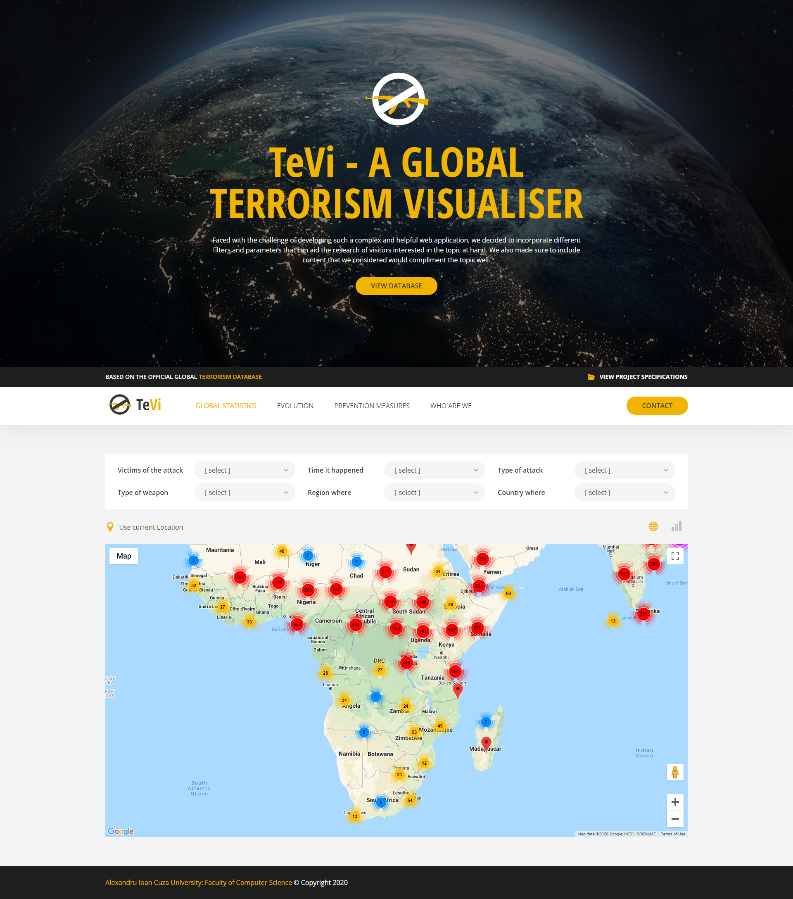
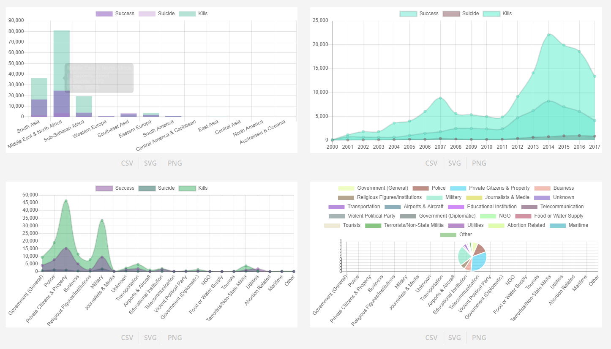
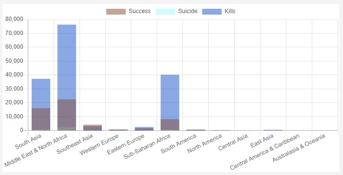

Global Statistics
The main page of the TeVi website is Global Statistics.
Here the user first sees the intro section with a short presentation of the project and a button which redirects to the official database.
After scrolling through that, the user can see the main content of the page and, also, the website: the option to filter the attacks and 2 possible views for the attacks. To filter the attacks, the user just has to click on a select field and choose an option.

This action will affect the events selected to be taken into consideration for the map and the charts.
The user can choose what view he wants by clicking on the map or chart button on top.

The map shows the events in clusters where there are more events which happened close to one another. The user can click on a cluster to zoom it and when he gets to a single attack event (on one fixed location), he can click on it to open a popup with details.

The popup has 2 buttons on the bottom, which allow the user to search for the weapon used in the attack on Wikipedia or Google.
If the user chooses the chart view, he will be able to see 4 different relevant charts.
-  This chart showcases terrorism by regions.
-
 This chart showcases the terrorist incidents which happened in a certain period of time.
This chart showcases the terrorist incidents which happened in a certain period of time.
-
 This chart showcases the most attacked targets.
This chart showcases the most attacked targets.
-
 This chart showcases the attack types.
This chart showcases the attack types.
The user can download a PNG, a SVG or a CSV for each chart by clicking on the buttons under the charts.